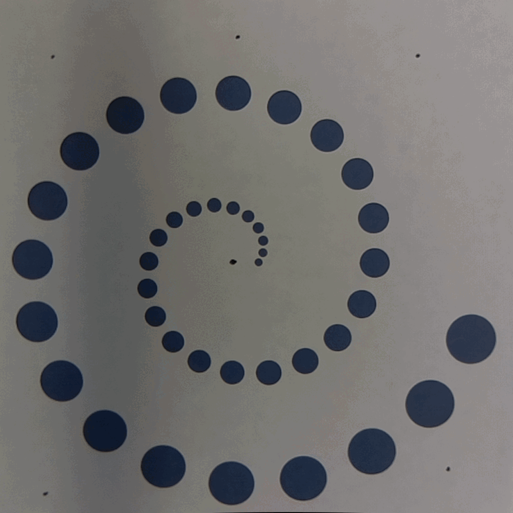

phenakistoscope day 1
last edited: 2022.09.08
The artist
traceloops makes cool stop motion animations,
which are kind of like
phenakistiscopes.
Since I like making
looping gifs anyways, this
seems like a cool place to start!
I want to set up a workflow which creates svg's in p5 which are ready to laser cut on the
Machine Agency's Trotec Speedy 400, along with guides for photgraphing and assembling.
p5 sketch
This
p5 sketch uses the p5 svg library to directly create
svgs. A circle with a diameter of 10 in p5 land creates a circle of radius ~3mm in the real world,
so I'm manually applying a scale factor to work with real-world units. There's probably some
smarter way to handle this... but works for now. The speedy 400 wants a stroke width of
0.001mm, but that's impossible to see on the digital canvas. I made a quick spiral to test out, adding a
circle in the center as the mounting point for subsequent pictures.
laser cutting
Super easy to laser cut, the svg is in a format ready for the speedy. Maybe some ~direct control~ is
to come...
photographing
I took pictures on the Jubilee since it had a camera tool equipped alreaady. I taped a sheet of
paper to the bed plate, made sure the entire sheet was in view-ish, and marked the paper through
the phenakistiscope mounting hole with a sharpie. I eyeballed 8 points to rotate around-- I should
add these guidelines in the p5 sketch to make this more precise.
For posterity: assemble the photos into a gif with
convert -delay 15 -loop 0 *.png phenakistoscsope.gif
(requires imagemagick)

phenakistiscope v0
reflections & notes
Compared to making purely digital loops, there's definitely some delayed gratification in making
physical loops. But, it's a ton of fun to see the p5 sketch come to life on the laser cutter.
Next time, I can (a) make the phenakistiscope a bit smaller, (b) laser cut a circle around it, and (c) add
rotation guides to make this whole thing cleaner. A different photography setup with better lighting
will help, too. Can also simulate the loop in p5 to play around with how many frames to include.